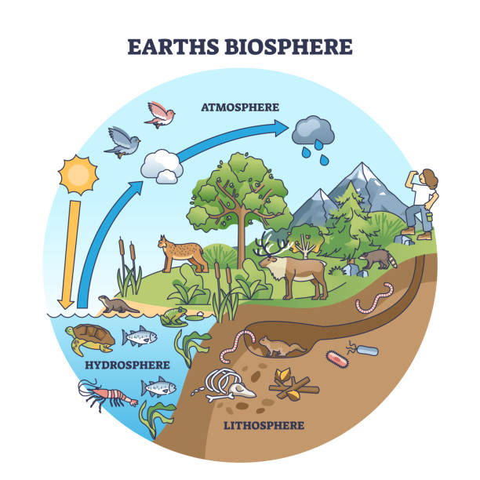

Discover how biotechnology is transforming modern medicine through scientific research, advanced technology and innovative healthcare solutions.
About | Media | Location | Document
Learn about biotechnology and its role in developing modern medical treatments and healthcare technologies.

Biotechnology plays an important role in modern healthcare. It helps scientists develop vaccines, advanced medicines, genetic testing and innovative treatment methods.
Some important applications include:
1. Genetic Engineering
2. Vaccine Development
3. Stem Cell Research
4. Gene Therapy
5. Personalized Medicine
6. Disease Diagnosis
Biotechnology is creating new possibilities in healthcare. It supports early disease detection, improves medical research and helps develop more effective treatments. These innovations aim to make healthcare safer, smarter and more accessible for everyone.
Learn MoreInnovate | Discover | Transform | Heal